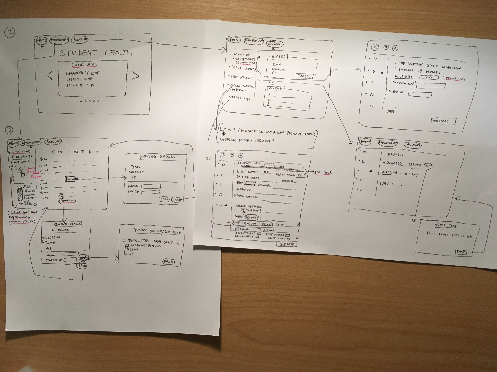

It is very important for students to maintain physical/mental health to keep up with the workload (lectures, assignments/projects, research, part-time jobs etc.) during the trimester. Also many are paying student loans or getting support from families, a low budget healthcare is essential.
I grouped the identified key points into the following 4 parts;
1. It’s difficult to get a timely appointment at Student Health.
2. There is a lack of transparency and flexibility regarding the current booking system (no visible clinic schedules; no checkable personal medical history; hard to make adjustments regarding the booking and cancellation of appointments).
3. It’s troublesome to repeat scripts and get test results through calling the clinics.
4. Result from point 1 to 3, students may seek other solutions including visiting other clinics and self-medication, which leads to higher budget and time waste.
Using the IDEO Innovation Scale, the possible solutions are prioritized considering efficiency and effectiveness, with new/innovative ideas being highlighted.

To solve the problem within a restricted timeline, I’ll focus on solutions listed in the first quadrant (short time & expected effectiveness). It is easier to get a timely appointment or flexibly fit around study/working schedule when the clinic availability is visible. This could be a multi-functional website with the following features;
1. Clinic calendar that displays available time slots for appointments and queuing status as well as allows booking, cancellation and queuing request.
2. Online personal login account that allows updating personal information, managing appointments, checking personal medical history, repeating prescriptions and seeing test results.
3. Optional notifications of appointments, recent cancellations, test results to email/phone provided in the personal account by students.
4. Provides emergency lines, health lines, health guidance and other relevant helpful information.

Feedback on the wireframe:
1. (general) Make it easier and shorter (e.g. no extra form for script repeating request when the user fills in personal info in another section already).
I was also thinking about:
2. Legal issues regarding personal health access rights.
3. Log in as the first step so that the user doesn't need to log in every time when booking/cancelling.
4. Better categorize the small sections.
According to the Health Information Privacy Code, patients have the rights to access their personal health records upon a request.As the request needs to be granted before checking the records, I’ll put up a request section instead of the personal health records section to make sure the content is legal.